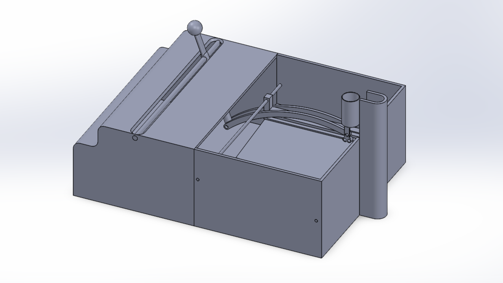
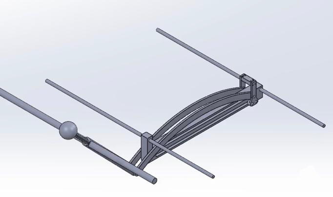
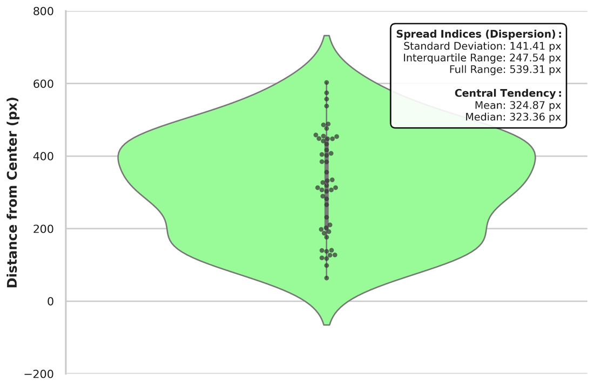
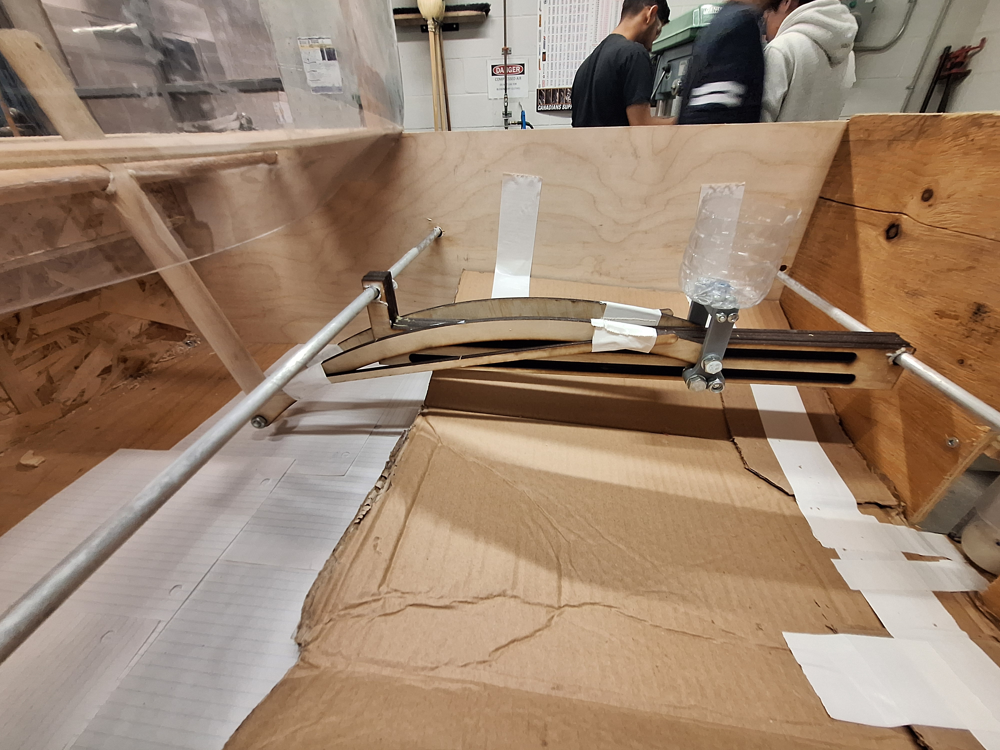
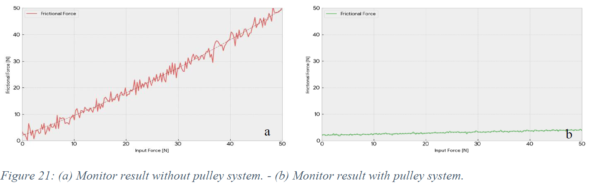

Launch & Snatch
Mechanical Toy
ME100 Design Project · December 2025

Overview
Launch & Snatch is a fully mechanical tabletop arcade game designed by a five-person team for Spin Master. A foot-pump launcher sends a ping-pong ball into the air; the player uses one joystick to position a two-axis catcher.
- Constraints: no electronics, under $150 CAD, base under 1 m × 1 m, and launch speed below 7.7 m/s.
- Prototype: 905 × 650 × 300 mm plywood frame with laser-cut and 3D-printed components.
- My work: laser-cut frame components, frame modifications, and launcher development.
Mechanical Design

A 1.7 in ID PVC launcher, driven by a foot pump, was selected for its adjustable and repeatable pneumatic launch. The catcher uses a crank-slotted lever: fore-aft joystick motion translates the assembly while lateral input moves the basket across the play area.

Validation
- Launch: 0.67 m average peak height and 3.8 m/s initial velocity—above the 0.5 m playability target and below the safety limit.
- Randomization: 50 launches produced a 141.41 px standard deviation in landing position, with no repeated landing locations in any 10-launch sequence.
- Playability: approximately 13% catch rate across 60 attempts; prototype cost was $127.61.

Key Engineering Challenge
Lateral joystick input produced a moment that bound the slotted bar against its guide rails. Replacing wooden dowels with aluminum rods and adding grease improved the motion, but did not eliminate the binding.

The proposed next iteration adds a dual-pulley, cable-based counter-torque system. Ansys Discovery analysis predicts roughly a 60% reduction in friction by opposing the rotational load that causes binding.

Outcome
The prototype demonstrated a safe, playable, electronics-free game and established a test-backed path to improve the two-axis control mechanism. The project emphasized mechanism design, rapid fabrication, quantitative testing, and iteration from prototype feedback.